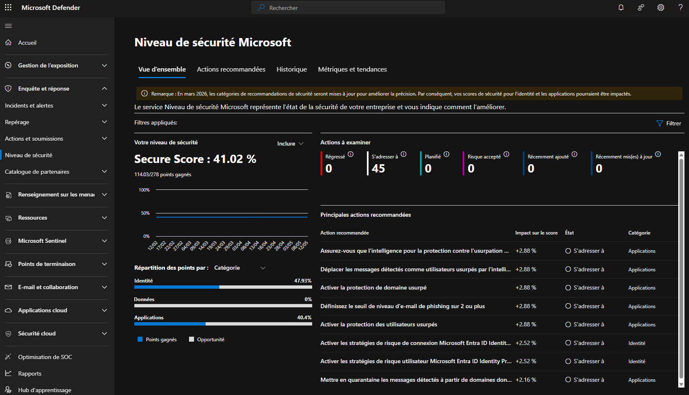

Tutorial – Microsoft 365 Security
This check verifies the overall Microsoft 365 security posture using Secure Score.
A low Secure Score may indicate:
Open the Microsoft Defender portal and navigate to:
Microsoft Defender → Exposure Management → Secure Score
https://security.microsoft.com/securescore
Verify that:
